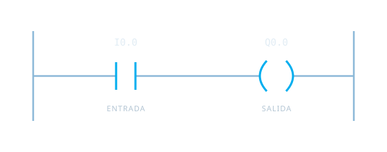

Entiende la lógica
Acércate a la automatización industrial a través de la lógica Ladder y la relación entre entradas y salidas.

APLICACIÓN EDUCATIVA · ANDROID
La lógica se entiende
poniéndola en práctica.
Explora la automatización industrial con ejercicios de lógica Ladder y simulaciones. Una aplicación de DHANCRI Studio desarrollada para Android.
Descubre la propuestaDe los conceptos
al funcionamiento.
APRENDER HACIENDO
Acércate a la automatización industrial a través de la lógica Ladder y la relación entre entradas y salidas.
Trabaja los conceptos mediante ejercicios de programación Ladder.
Observa el funcionamiento de la lógica en simulaciones de automatización industrial.
DEL CONCEPTO A LA ACCIÓN
Un circuito Ladder representa visualmente una relación lógica. Los ejercicios y las simulaciones permiten explorar esa relación en la práctica.
